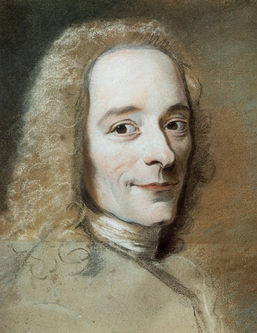
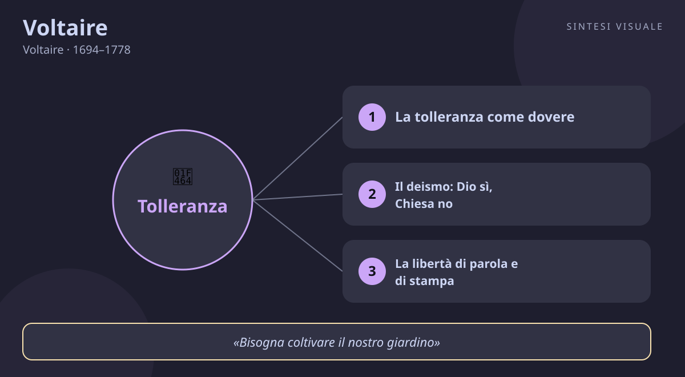

Voltaire
Voltaire · 1694–1778
«Se Dio non esistesse, bisognerebbe inventarlo»
- Deismo
- Tolleranza
- Ragione
- Libertà di parola
💬La massima
«Se Dio non esistesse, bisognerebbe inventarlo.»
— Épître à l'auteur du livre des Trois imposteurs (Epistola 104), 1769, v. 22 (in francese: «Si Dieu n'existait pas, il faudrait l'inventer»)
È il verso più famoso di Voltaire, e quasi tutti lo citano a metà. Il verso successivo, infatti, dice: «ma tutta la natura grida che esiste». La massima completa rivela il suo vero pensiero: Voltaire non era ateo, era deista. Credeva in un Dio creatore e ordinatore dell'universo, ma rifiutava le religioni rivelate, i dogmi, i miracoli e soprattutto il clero che usava Dio come strumento di potere. La frase va letta su due livelli. Primo: Dio esiste davvero, e lo dimostra l'ordine della natura. Secondo: anche dal punto di vista puramente umano, l'idea di un giudice supremo serve a tenere a freno i potenti e i malvagi quando nessuna polizia può vederli. Voltaire detestava gli atei militanti quasi quanto i fanatici: temeva che senza alcun freno morale la società piombasse nella violenza. La sua posizione è un equilibrio tipicamente suo: la ragione ti dice che Dio esiste, e la prudenza ti dice che guai a farne a meno. Non è cinismo, è il realismo di chi ha visto troppe guerre di religione per credere che basti la bontà spontanea degli uomini.
👤Biografia
François-Marie Arouet nasce a Parigi il 21 novembre 1694, figlio di un notaio benestante. Studente brillante e indisciplinato al collegio Louis-le-Grand dei gesuiti — che lo ricorderanno con orgoglio e terrore —, comincia presto a scrivere satire che gli costano cara: nel 1717 finisce alla Bastiglia per versi contro il Reggente. Esce di prigione e si reinventa con un nome d'arte destinato all'immortalità: Voltaire. Il successo teatrale dell'Edipo (1718) lo lancia, ma il suo carattere velenoso lo caccia nei guai: dopo un litigio con un nobile, nuova Bastiglia nel 1726 ed esilio in Inghilterra, dove scopre Locke, Newton e la monarchia parlamentare — una folgorazione. Tornato in Francia, vive anni felici e fecondissimi al castello di Cirey con l'amante e musa Émilie du Châtelet, matematica e fisica geniale, che traduce Newton mentre lui scrive di tutto. Litiga con tutti: lascia la corte di Federico II di Prussia nel 1753 dopo una clamorosa rottura, e dal 1758 si installa a Ferney, al confine svizzero, da dove — ricchissimo, celebre, instancabile — dirige le sue campagne contro l'ingiustizia in tutta Europa. Muore a Parigi il 30 maggio 1778, accolto da una folla trionfante, a 83 anni, dopo aver scritto circa 20.000 lettere. Ironico, coraggioso, vendicativo, generoso: un caratteraccio meraviglioso che fece della propria vita un'opera d'arte polemica.
📌Sintesi del pensiero
Voltaire è il simbolo dell'Illuminismo militante: la ragione come arma contro il fanatismo, la superstizione e l'assolutismo. Deista in religione, liberale in politica, tollerante per principio, crede che la filosofia non debba contemplare il mondo da una torre ma cambiarlo con pamphlet, lettere e processi d'opinione. Il cuore del suo pensiero è semplice e radicale: nessun dogma — religioso o politico — vale una sola goccia di sangue innocente, e ogni potere deve rispondere al tribunale della ragione e dell'umanità.
🏛️I temi fondamentali
-
- La tolleranza come dovere, non come concessione. Il tema che lo ossessiona per tutta la vita: nessuno può essere perseguitato per le sue credenze. Quando nel 1762 il protestante Jean Calas viene torturato e giustiziato a Tolosa con la falsa accusa di aver ucciso il figlio per impedirne la conversione al cattolicesimo, Voltaire ne fa una causa europea: pubblica il Trattato sulla tolleranza (1763), smonta le prove, e ottiene nel 1765 la riabilitazione di Calas. Ripete l'impresa per i Sirven e denuncia il rogo del giovane La Barre. La tolleranza, per lui, non è bontà d'animo: è il fondamento della convivenza civile.
-
- Il deismo: Dio sì, Chiesa no. Voltaire crede in un Dio architetto dell'universo — il grande Orologiaio che ha messo in moto la natura con leggi razionali — ma rifiuta tutto il resto: rivelazioni, miracoli, dogmi, preti. Il suo grido di guerra, Écrasez l'infâme! («Schiacciate l'infame!»), non è contro Dio ma contro la Chiesa fanatica che benedice roghi e censure. Agli atei risponde con la massima di oggi: negare ogni principio superiore apre la porta al caos morale. È una religione minima, fatta di ragione e coscienza, senza intermediari.
-
- La libertà di parola e di stampa. Voltaire fu censurato, imprigionato ed esiliato per ciò che scriveva, e ne fece una missione: difendere chiunque venga perseguitato per le proprie idee, a cominciare dagli autori messi all'indice. Le sue battaglie per i libri proibiti e i giornalisti perseguitati fondano l'idea moderna che nessuna verità ha bisogno del boia per imporsi. Attenzione alla frase celebre che gli attribuiscono («difenderò fino alla morte il tuo diritto a dirlo»): non l'ha mai scritta lui, è una sintesi posteriore del suo pensiero — ma rende bene lo spirito con cui visse.
-
- Contro l'ottimismo a buon mercato: il male esiste. Nel Candido demolisce la filosofia di Leibniz secondo cui viviamo «nel migliore dei mondi possibili»: dopo il terremoto di Lisbona del 1755, che seppellì decine di migliaia di persone il giorno di Ognissanti, predicare che «tutto va bene» gli sembra un insulto alle vittime. Il male — naturale e umano — è reale, e nessuna teodicea lo cancella. La risposta non è disperarsi ma rimboccarsi le maniche: «bisogna coltivare il nostro giardino».
-
- Il filosofo in azione: Ferney come quartier generale. Voltaire inventa una figura nuova: l'intellettuale militante che usa la fama come un'arma. Da Ferney scrive migliaia di lettere, finanzia cause legali, ospita perseguitati, fa pressione su ministri e sovrani di mezza Europa, costruisce persino case e una chiesa per i suoi contadini («a Dio», precisò, «non ai preti»). La filosofia, per lui, si misura dai risultati: un innocente salvato vale più di dieci trattati.
📚Le opere principali
-
- Lettere filosofiche (o Lettere inglesi), 1734. Resoconto entusiasmante del soggiorno in Inghilterra: elogia la tolleranza religiosa, il parlamento, Locke e Newton, e per contrasto demolisce l'arretratezza francese. Tesi centrale: libertà e scienza rendono una nazione grande. Conta perché il libro fu condannato e bruciato dal Parlamento di Parigi — e proprio il rogo lo rese celeberrimo in tutta Europa.
-
- Candido o l'ottimismo, 1759. Romanzo fulminante: il giovane Candido attraversa guerre, naufragi e terremoti seguendo il precettore Pangloss, che ripete che tutto va per il meglio nel migliore dei mondi. Tesi centrale: l'ottimismo metafisico è una menzogna di fronte al male reale. Conta perché è il libro più letto di Voltaire ancora oggi, e il suo finale — «coltiviamo il nostro giardino» — è diventato un proverbio universale del fare concreto.
-
- Trattato sulla tolleranza, 1763. Nato dal caso Calas, è il manifesto contro la persecuzione religiosa: solo la tolleranza garantisce pace e prosperità, mentre l'intolleranza ha riempito l'Europa di roghi e guerre civili. Tesi centrale: la fede non si impone con la violenza. Conta perché fonda il principio moderno di libertà religiosa e resta il testo-simbolo delle sue battaglie civili.
-
- Dizionario filosofico, 1764. Raccolta di voci brevi e taglienti — da «Fanatismo» a «Tolleranza», da «Miracoli» a «Pregiudizi» — scritte per essere lette da tutti, non solo dai dotti. Tesi centrale: la ragione deve poter discutere di tutto, sacro compreso. Conta perché inventa un genere: la filosofia in formato agile, leggibile e sovversivo, antenata dell'articolo d'opinione moderno.
💬Massime celebri
-
«Bisogna coltivare il nostro giardino» — Candido, capitolo 30, 1759. Conta perché è la conclusione pratica di tutta la sua filosofia: smetti di sproloquiare sul mondo ideale e migliora il pezzo di realtà che ti è affidato.
-
«Il pregiudizio è un'opinione senza giudizio» — Dizionario filosofico, voce «Pregiudizi», 1764. Conta perché in sette parole smaschera il meccanismo di ogni fanatismo: giudicare prima di conoscere.
-
«Schiacciate l'infame! (Écrasez l'infâme!)» — motto ricorrente nelle sue lettere degli anni 1760. Conta perché è il grido di battaglia con cui firmava la corrispondenza con gli amici illuministi: l'infame è il fanatismo religioso che perseguita e uccide.
⌛Contesto storico
Voltaire vive 83 anni nel cuore di un secolo che cambia pelle: nasce nel 1694, sotto il Re Sole al tramonto — Luigi XIV muore nel 1715 — e muore nel 1778, undici anni prima della Rivoluzione francese che lui stesso, senza volerlo, ha contribuito a preparare. La Francia in cui cresce è l'ancien régime: monarchia assoluta per diritto divino, società divisa in tre ordini (clero, nobiltà, Terzo Stato), censura preventiva sui libri, Bastiglia per gli spiriti liberi, cattolicesimo come religione di Stato dopo la revoca dell'Editto di Nantes (1685), che aveva scatenato persecuzioni contro i protestanti.
Parigi è però anche la capitale dei salotti, dei caffè e delle «repubbliche delle lettere»: una borghesia colta e insofferente legge, discute e sogna l'Inghilterra, dove il Parlamento limita il re e Newton spiega il cielo. L'esilio londinese del 1726-1728 è la sua università vera: scopre un paese dove i quaccheri pregano in pace e la scienza è gloria nazionale.
I movimenti che lo formano sono il libertinismo erudito del Seicento, Pierre Bayle — che nel Dizionario storico e critico aveva già separato morale e religione — e gli inglesi Locke (tolleranza, esperienza) e Newton (universo ordinato da leggi). Da parte sua, Voltaire trasmette il testimone all'Encyclopédie di Diderot e d'Alembert, agli illuministi di mezza Europa, ai riformatori come Beccaria contro la tortura, e infine — oltre le sue intenzioni moderate — alla Rivoluzione francese, che nel 1791 porterà le sue ceneri al Panthéon. I suoi eredi diretti sono il liberalismo politico, la laicità dello Stato e la stampa libera.
🌊L'eredità
Senza Voltaire il mondo moderno parlerebbe un'altra lingua. Diderot e gli enciclopedisti imparano da lui che la filosofia deve sporcarsi le mani con l'attualità; Cesare Beccaria, leggendo le sue campagne contro la tortura giudiziaria, scrive Dei delitti e delle pene. La Rivoluzione francese lo canonizza: nel 1791 le sue ceneri entrano al Panthéon con l'iscrizione «ai grandi uomini la patria riconoscente». Nell'Ottocento i liberali di tutta Europa citano il Trattato sulla tolleranza contro le restaurazioni clericali, e la Terza Repubblica francese farà della laicità di Stato — separazione tra Chiese e Repubblica, legge del 1905 — il compimento del suo programma. L'idea che lo Stato non abbia una religione e che la fede sia un affare privato nasce in larga parte dalle sue battaglie. E ancora oggi ogni vignettista satirico, ogni editorialista che deride i potenti, ogni campagna d'opinione per un innocente in carcere cammina — spesso senza saperlo — sulla strada aperta dal patriarca di Ferney con la sua penna affilata.
🌍Esempi di oggi
-
- Il processo mediatico senza prove. Un personaggio noto viene travolto sui social da accuse mai verificate, perde il lavoro prima ancora di un'indagine. Voltaire, che impiegò tre anni per riabilitare il povero Calas giustiziato su un pregiudizio, ti direbbe: nessuna folla — religiosa o digitale — può sostituire il giudizio fondato sui fatti.
-
- Il collega che «porta sfortuna». In ufficio circola la voce che lavorare con una certa persona «porti male», e tutti la evitano senza averci mai parlato. È il pregiudizio come «opinione senza giudizio»: Voltaire ti inviterebbe a sospendere la diceria e a farti un'idea tua, coltivando il tuo giardino invece delle maldicenze altrui.
-
- Litigare sul mondo, trascurando il concreto. Passi le serate a discutere animatamente sui social dei massimi sistemi — politica, religione, complotti — mentre le tue cose pratiche (salute, conti, relazioni) vanno a rotoli. Il Candido di Voltaire scrollerebbe le spalle: meno prediche sul migliore dei mondi possibili, più cura del pezzetto di realtà che dipende da te.
📄
# Voltaire — «Se Dio non esistesse, bisognerebbe inventarlo»
Buongiorno! Oggi incontriamo il guastafeste più brillante della storia della filosofia: il francese che da solo, armato di penna e ironia, dichiarò guerra al fanatismo e fece tremare re e preti. Il ritratto qui sopra — il celebre pastello di Maurice Quentin de La Tour del 1735 circa — lo mostra nel pieno della maturità, con quello sguardo acuto e divertito di chi ha appena trovato la battuta che smonta il tuo argomento.
🧠Quiz
Metti alla prova quello che hai letto — rispondi in chat con es. 1B 2A 3C 4D 5A (usa «-» per le risposte che salti):
1 Da quale opera è tratta la massima di oggi?
2 Che cosa significa, nel pensiero di Voltaire, «Se Dio non esistesse, bisognerebbe inventarlo»?
3 Perché Voltaire scrisse il Trattato sulla tolleranza (1763)?
4 Quale frase Voltaire NON ha mai scritto, pur essendogli spesso attribuita?
5 Dove trascorse Voltaire gli ultimi vent'anni della sua vita, dirigendo le sue campagne per la giustizia?
✅Soluzioni — tocca per vedere
1B – 2C – 3B – 4D – 5C
🔁Ripasso
- Massima ed Épître 1769: se hai sbagliato la 1 o la 2, ricorda che Voltaire era deista, non ateo: Dio esiste (lo grida la natura) e la sua idea trattiene gli uomini dal male. La frase completa ha sempre due gambe, metafisica e pratica.
- Calas e la tolleranza: se hai sbagliato la 3, ricorda Tolosa 1762: un padre protestante giustiziato per un delitto mai commesso. Il Trattato nasce da quel caso concreto, non da teoria astratta.
- Citazioni apocrife: se hai sbagliato la 4, ricorda la lezione del giorno: le frasi più condivise sono spesso inventate. Voltaire difese la libertà di parola con i fatti (libri proibiti, autori perseguitati), non con quella frase, coniata dopo da altri.
🖼️In un colpo d’occhio

Tocca l’immagine per ingrandirla.